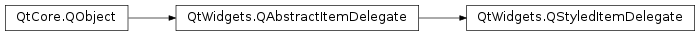

QStyledItemDelegate¶
Synopsis¶
Functions¶
- def
itemEditorFactory() - def
setItemEditorFactory(factory)
Virtual functions¶
- def
displayText(value, locale) - def
initStyleOption(option, index)
Detailed Description¶
The
PySide2.QtWidgets.QStyledItemDelegateclass provides display and editing facilities for data items from a model.When displaying data from models in Qt item views, e.g., a
PySide2.QtWidgets.QTableView, the individual items are drawn by a delegate. Also, when an item is edited, it provides an editor widget, which is placed on top of the item view while editing takes place.PySide2.QtWidgets.QStyledItemDelegateis the default delegate for all Qt item views, and is installed upon them when they are created.The
PySide2.QtWidgets.QStyledItemDelegateclass is one of the Model/View Classes and is part of Qt’s model/view framework . The delegate allows the display and editing of items to be developed independently from the model and view.The data of items in models are assigned an
Qt.ItemDataRole; each item can store aPySide2.QtCore.QVariantfor each role.PySide2.QtWidgets.QStyledItemDelegateimplements display and editing for the most common datatypes expected by users, including booleans, integers, and strings.The data will be drawn differently depending on which role they have in the model. The following table describes the roles and the data types the delegate can handle for each of them. It is often sufficient to ensure that the model returns appropriate data for each of the roles to determine the appearance of items in views.
Role Accepted Types Qt.BackgroundRolePySide2.QtGui.QBrushQt.BackgroundColorRolePySide2.QtGui.QColor(obsolete; useQt.BackgroundRoleinstead)Qt.CheckStateRoleQt.CheckStateQt.DecorationRolePySide2.QtGui.QIcon,PySide2.QtGui.QPixmap,PySide2.QtGui.QImageandPySide2.QtGui.QColorQt.DisplayRolePySide2.QtCore.QStringand types with a string representationQt.EditRoleSee PySide2.QtWidgets.QItemEditorFactoryfor detailsQt.FontRolePySide2.QtGui.QFontQt.SizeHintRolePySide2.QtCore.QSizeQt.TextAlignmentRoleQt.AlignmentQt.ForegroundRolePySide2.QtGui.QBrushQt.TextColorRolePySide2.QtGui.QColor(obsolete; useQt.ForegroundRoleinstead)Editors are created with a
PySide2.QtWidgets.QItemEditorFactory; a default static instance provided byPySide2.QtWidgets.QItemEditorFactoryis installed on all item delegates. You can set a custom factory usingPySide2.QtWidgets.QStyledItemDelegate.setItemEditorFactory()or set a new default factory withQItemEditorFactory.setDefaultFactory(). It is the data stored in the item model with theEditRolethat is edited. See thePySide2.QtWidgets.QItemEditorFactoryclass for a more high-level introduction to item editor factories. The Color Editor Factory example shows how to create custom editors with a factory.
Subclassing QStyledItemDelegate¶
If the delegate does not support painting of the data types you need or you want to customize the drawing of items, you need to subclass
PySide2.QtWidgets.QStyledItemDelegate, and reimplementPySide2.QtWidgets.QStyledItemDelegate.paint()and possiblyPySide2.QtWidgets.QStyledItemDelegate.sizeHint(). ThePySide2.QtWidgets.QStyledItemDelegate.paint()function is called individually for each item, and withPySide2.QtWidgets.QStyledItemDelegate.sizeHint(), you can specify the hint for each of them.When reimplementing
PySide2.QtWidgets.QStyledItemDelegate.paint(), one would typically handle the datatypes one would like to draw and use the superclass implementation for other types.The painting of check box indicators are performed by the current style. The style also specifies the size and the bounding rectangles in which to draw the data for the different data roles. The bounding rectangle of the item itself is also calculated by the style. When drawing already supported datatypes, it is therefore a good idea to ask the style for these bounding rectangles. The
PySide2.QtWidgets.QStyleclass description describes this in more detail.If you wish to change any of the bounding rectangles calculated by the style or the painting of check box indicators, you can subclass
PySide2.QtWidgets.QStyle. Note, however, that the size of the items can also be affected by reimplementingPySide2.QtWidgets.QStyledItemDelegate.sizeHint().It is possible for a custom delegate to provide editors without the use of an editor item factory. In this case, the following virtual functions must be reimplemented:
PySide2.QtWidgets.QStyledItemDelegate.createEditor()returns the widget used to change data from the model and can be reimplemented to customize editing behavior.PySide2.QtWidgets.QStyledItemDelegate.setEditorData()provides the widget with data to manipulate.PySide2.QtWidgets.QStyledItemDelegate.updateEditorGeometry()ensures that the editor is displayed correctly with respect to the item view.PySide2.QtWidgets.QStyledItemDelegate.setModelData()returns updated data to the model.The Star Delegate example creates editors by reimplementing these methods.
QStyledItemDelegate vs. QItemDelegate¶
Since Qt 4.4, there are two delegate classes:
PySide2.QtWidgets.QItemDelegateandPySide2.QtWidgets.QStyledItemDelegate. However, the default delegate isPySide2.QtWidgets.QStyledItemDelegate. These two classes are independent alternatives to painting and providing editors for items in views. The difference between them is thatPySide2.QtWidgets.QStyledItemDelegateuses the current style to paint its items. We therefore recommend usingPySide2.QtWidgets.QStyledItemDelegateas the base class when implementing custom delegates or when working with Qt style sheets. The code required for either class should be equal unless the custom delegate needs to use the style for drawing.If you wish to customize the painting of item views, you should implement a custom style. Please see the
PySide2.QtWidgets.QStyleclass documentation for details.
-
class
PySide2.QtWidgets.QStyledItemDelegate([parent=nullptr])¶ Parameters: parent – PySide2.QtCore.QObjectConstructs an item delegate with the given
parent.
-
PySide2.QtWidgets.QStyledItemDelegate.displayText(value, locale)¶ Parameters: - value – object
- locale –
PySide2.QtCore.QLocale
Return type: unicode
This function returns the string that the delegate will use to display the
Qt.DisplayRoleof the model inlocale.valueis the value of theQt.DisplayRoleprovided by the model.The default implementation uses the
QLocale.toStringto convertvalueinto aPySide2.QtCore.QString.This function is not called for empty model indices, i.e., indices for which the model returns an invalid
PySide2.QtCore.QVariant.See also
QAbstractItemModel.data()
-
PySide2.QtWidgets.QStyledItemDelegate.initStyleOption(option, index)¶ Parameters: - option –
PySide2.QtWidgets.QStyleOptionViewItem - index –
PySide2.QtCore.QModelIndex
Initialize
optionwith the values using the indexindex. This method is useful for subclasses when they need aPySide2.QtWidgets.QStyleOptionViewItem, but don’t want to fill in all the information themselves.See also
- option –
-
PySide2.QtWidgets.QStyledItemDelegate.itemEditorFactory()¶ Return type: PySide2.QtWidgets.QItemEditorFactoryReturns the editor factory used by the item delegate. If no editor factory is set, the function will return null.
-
PySide2.QtWidgets.QStyledItemDelegate.setItemEditorFactory(factory)¶ Parameters: factory – PySide2.QtWidgets.QItemEditorFactorySets the editor factory to be used by the item delegate to be the
factoryspecified. If no editor factory is set, the item delegate will use the default editor factory.
© 2018 The Qt Company Ltd. Documentation contributions included herein are the copyrights of their respective owners. The documentation provided herein is licensed under the terms of the GNU Free Documentation License version 1.3 as published by the Free Software Foundation. Qt and respective logos are trademarks of The Qt Company Ltd. in Finland and/or other countries worldwide. All other trademarks are property of their respective owners.